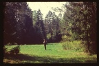
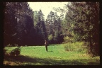

Страницы авторов "Тёмного леса"
Литературный Кисловодск и окрестности
Пишите нам! temnyjles@narod.ru
Стихи (86 авторов)
Проза (40 авторов)
Драматургия (9 авторов, 22 пьесы)
История, география, краеведение
Песни и романсы (12 альбомов)
Фотографии и рисунки (42 альбома)
Евгений Кенеман (1954 - 1999). Стихи, проза, рисунки
Юрий Насимович. Стихи
Юрий Насимович. Книги по естественным наукам и натурфилософии
Юрий Насимович и др. Книги и статьи по естественнонаучному краеведению
Ольга Таллер. Стихи, акварели, рисунки, фотографии
Галина Дицман. Песни, стихи, проза
Людмила Темчина. Стихи и проза
Илья Миклашевский. Стихи, проза, статьи
Страница ансамбля МИРАЛАН - романсы, стихи, биографии музыкантов
Страница о селе Хатунь Ступинского района Московской области.
Страница Михаила Гара - История церкви; фотографии Подмосковья
Страница Акопа Назаретяна (1948-2019) (философия, психология, социология, футурология)
Страница Револьта Пименова (стихи, проза, богословие, воспоминания)
Страница Владимира Мильмана (пьесы, стихи, воспоминания)
Страница геофизика Игоря Ивановича Рокитянского (статьи, воспоминания)
Из архивов Гаров и Миклашевских (дневники, воспоминания)
Страница Любови Трайдук, кисловодского краеведа
Страница Вячеслава Яновского, кисловодского краеведа
Страница Алексея Травкина, кисловодского краеведа и художника
Страницы авторов "Литературного Кисловодска"
Автобиографические рассказы из "Литературного Кисловодска" (29 авторов)
Биографические и краеведческие очерки из "Литературного Кисловодска"
Литературоведческие очерки из "Литературного Кисловодска"
Стихи из "Литературного Кисловодска"
Светлана Гаделия (1940 - 2019). Стихи
Анна Мотенко (1946 - 2017). Стихи, проза, мемуары
Игорь Паньков (1959 - 2012). Стихи и проза
Геннадий Трофимов. (1932 - 2014). Стихи, проза, мемуары
Юлия Чугай. Стихи, воспоминания
Наталья Рябинина. Стихи, проза, статьи, воспоминания
Сергей Смайлиев. Стихи, фотографии

 


Последнее изменение страницы 11 Jul 2023